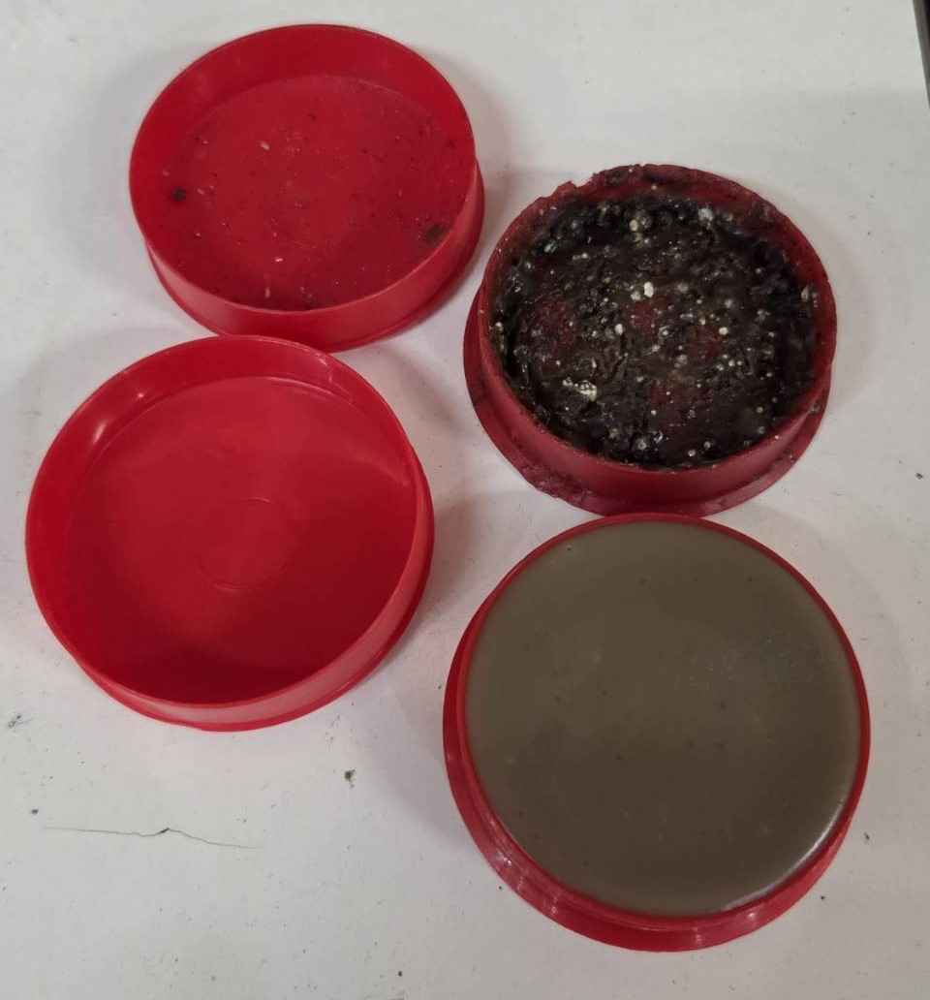
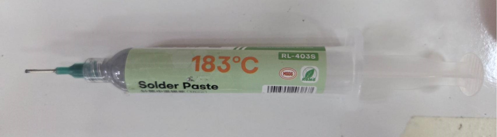
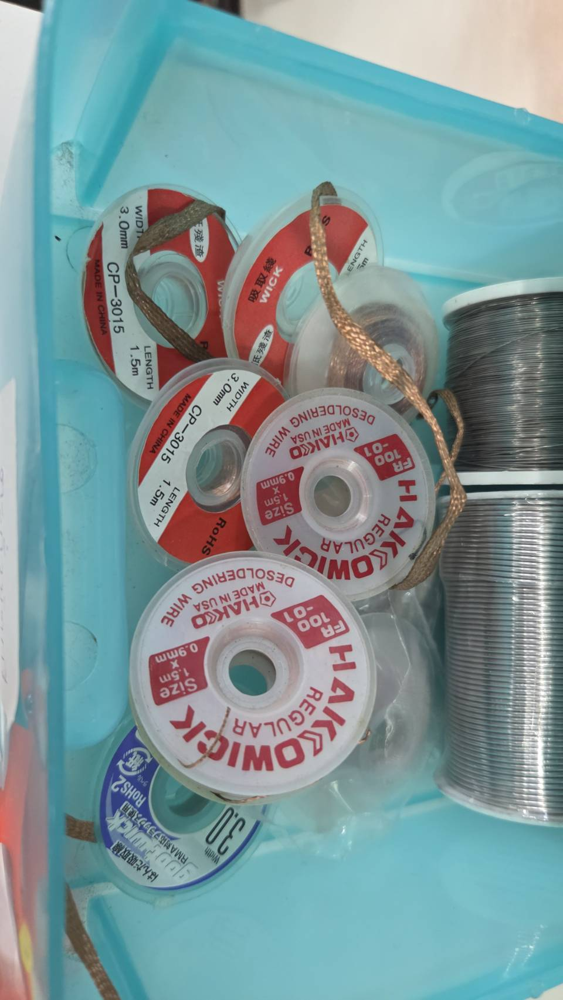
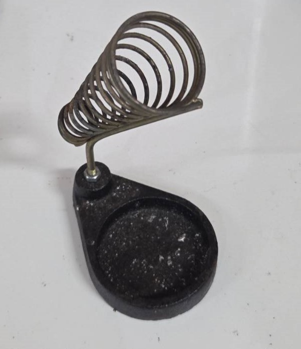
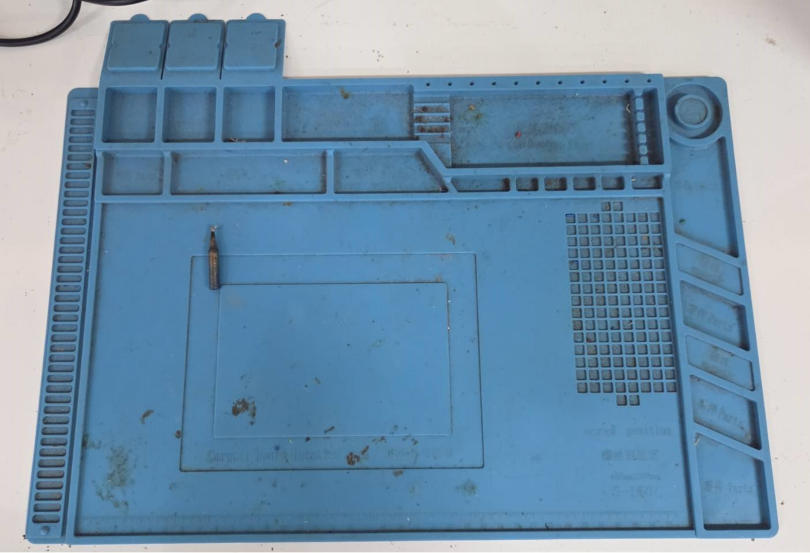
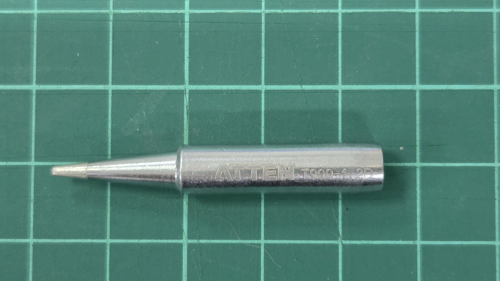
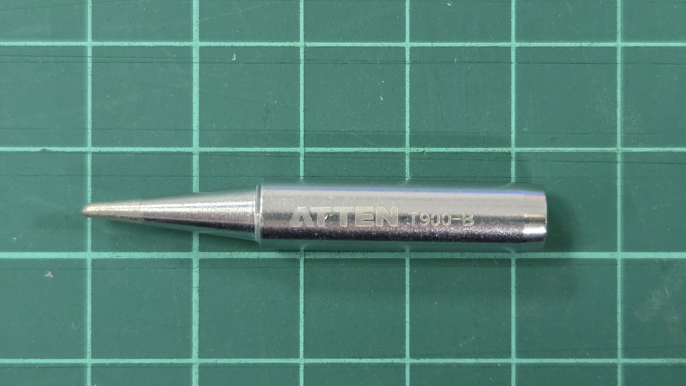

2. Soldering & Rework (เทคนิคการบัดกรีและเป่าลมร้อน)
งานสร้างหุ่นยนต์หนีไม่พ้นเรื่องการเชื่อมต่อวงจร บทนี้จะสอนการใช้อุปกรณ์บัดกรีมาตรฐานของแลป (Atten) การเลือกหัวแร้งให้ถูกกับงาน และเทคนิคการบัดกรีที่ถูกต้องเพื่อความแข็งแรงทางไฟฟ้าและกลไก
⚡ สรุปสำหรับมือใหม่ (Beginner Summary)
หากคุณไม่มีเวลาอ่านทั้งหมด นี่คือ 4 กฎเหล็ก ที่ต้องทำตาม:
Safety First: หัวแร้งร้อน 350°C ห้ามโดนผิวหนัง และ ต้องปิดสวิตช์ + ถอดปลั๊กทุกครั้งเมื่อเลิกใช้
Heat Transfer: การบัดกรีคือการทำให้ชิ้นงานร้อน ไม่ใช่แค่ละลายตะกั่ว
วิธีทำ: เอาปลายหัวแร้งแตะ ขาอุปกรณ์+แผ่นวงจร พร้อมกัน นับ 1-2 วินาทีให้ร้อน แล้วค่อยป้อนตะกั่วตามเข้าไป
Tool Selection (เลือกหัวให้ถูก): ห้ามใช้หัวเข็มทำงานใหญ่!
งานเล็ก/วงจรทั่วไป: ใช้หัวเบอร์ T900-1.6D (ปากแบนเล็ก)
งานใหญ่/สายไฟ/XT60: ใช้หัวเบอร์ T900-2.4D (ปากแบนใหญ่)
Magic Helper: หากบัดกรียาก ตะกั่วไม่เกาะ หรือดูด้านๆ ให้แต้ม Flux (น้ำยาประสาน) ช่วยเสมอ
2.1. Soldering Stations (เครื่องมือบัดกรีในแลป)
เรามีเครื่องมือ 3 ระดับ แบ่งตามความเชี่ยวชาญของผู้ใช้งาน:
2.1.1. Atten AT8586 (Double Channel Rework Station)
เครื่องนี้เป็นอุปกรณ์หลักประจำโต๊ะทำงาน เนื่องจากเป็นระบบ 2-in-1 ที่รวมทั้ง Soldering Iron (หัวแร้ง) และ Hot Air Gun (เป่าลมร้อน) ไว้ในเครื่องเดียว
ระดับผู้ใช้: Advanced / Senior Students
คุณสมบัติ: เป็นเครื่อง 2-in-1 มีทั้งหัวแร้งและที่เป่าลมร้อนในตัวเดียว
การใช้งาน: เปิดสวิตช์หลักด้านหลัง -> เปิดสวิตช์ด้านหน้า (ซ้าย=ลมร้อน, ขวา=หัวแร้ง) -> กดปุ่ม SET เพื่อตั้งอุณหภูมิ
ข้อควรระวัง: เมื่อใช้ลมร้อนเสร็จ ห้ามปิดสวิตช์ทันที ให้วางด้ามเป่าลงบนแท่นวาง รอจนกว่าเครื่องจะระบายความร้อนและตัดการทำงานเอง (อุณหภูมิต่ำกว่า 100°C)
{kind=link}
ตำแหน่งปุ่มและสวิตช์:
สวิตช์หลัก (Main Power): สวิตช์สีดำอยู่ด้านหลังเครื่อง (ผู้ใช้งานต้องเปิดสวิตช์นี้ก่อนเสมอ เพื่อจ่ายไฟเข้าเครื่อง)
แผงควบคุมฝั่งซ้าย (Rework): สำหรับควบคุมชุดเป่าลมร้อน
แผงควบคุมฝั่งขวา (Solder): สำหรับควบคุมชุดหัวแร้งบัดกรี
ปุ่มหมุนกลาง (Knob): สำหรับปรับความแรงลม (Airflow) ของลมร้อน
2.1.1.1. วิธีใช้งานหัวแร้ง (Soldering Iron) - ฝั่งขวา
เปิดสวิตช์หลัก: ให้ผู้ใช้งานกดสวิตช์สีดำด้านหลังเครื่องไปที่ตำแหน่ง
ON(ไฟหน้าจอจะยังไม่ติดทันที)เปิดหัวแร้ง: กดสวิตช์โยกด้านหน้า ฝั่งขวา (เขียนว่า
SOLDER) ขึ้นหน้าจอฝั่งขวาจะแสดงอุณหภูมิปัจจุบัน
ตั้งอุณหภูมิ:
ผู้ใช้งานกดปุ่ม SET (ปุ่มสีฟ้าแถวบน ตัวกลาง) 1 ครั้ง
กดปุ่ม UP (\(\boldsymbol{\wedge}\)) หรือ DOWN (\(\boldsymbol{\vee}\)) ฝั่งขวา เพื่อปรับค่าอุณหภูมิ (แนะนำ 350°C สำหรับงานทั่วไป)
กดปุ่ม SET อีกครั้งเพื่อยืนยัน (หรือรอสักครู่ เครื่องจะบันทึกค่าเอง)
รออุณหภูมิ: รอจนตัวเลขวิ่งถึงค่าที่ตั้งไว้ (ไฟสถานะ
CALจะกระพริบเมื่ออุณหภูมิคงที่)
2.1.1.2. วิธีใช้งานเครื่องเป่าลมร้อน (Hot Air Gun) - ฝั่งซ้าย
เครื่องเป่าลมร้อนใช้สำหรับงานถอดอุปกรณ์ SMD หรือการเป่าท่อหด (Heat Shrink)
เลือกหัวเป่า (Nozzle Selection): ก่อนเปิดเครื่อง ให้ผู้ใช้งานเลือกหัวครอบปลายท่อให้เหมาะสมกับงาน:
งานเป่าชิ้นส่วนเล็ก (SMD): ให้สวมหัวครอบรูเล็ก เพื่อโฟกัสลมไม่ให้เป่าโดนอุปกรณ์ข้างเคียงปลิว
งานเป่าท่อหด: ไม่จำเป็นต้องสวมหัวครอบ (ใช้ปากท่อปกติได้เลย)
เปิดสวิตช์หลัก: กดสวิตช์สีดำด้านหลังเครื่อง (หากยังไม่ได้เปิด)
เปิดลมร้อน: กดสวิตช์โยกด้านหน้า ฝั่งซ้าย (เขียนว่า
REWORK) ขึ้นตั้งอุณหภูมิและแรงลม:
อุณหภูมิ (Temp): กดปุ่ม UP/DOWN ฝั่งซ้าย เพื่อปรับความร้อน
งานท่อหด: ตั้งค่าช่วง 250°C - 300°C
งานละลายตะกั่ว (SMD): ตั้งค่าช่วง 350°C - 380°C
แรงลม (Airflow): หมุนปุ่ม Knob ตรงกลาง
งาน SMD: ให้หมุนเบาๆ (ระดับ 2-4) เพื่อป้องกันอะไหล่ปลิวหาย
งานท่อหด: สามารถหมุนแรงได้ (ระดับ 6-8) เพื่อให้หดตัวเร็วขึ้น
เทคนิคการเป่าลม (Technique):
ผู้ใช้งานต้องถือด้ามเป่าให้ตั้งฉากกับชิ้นงาน
ห้ามจ่อนิ่งที่จุดเดียว: ให้ผู้ใช้งานวนหัวเป่าเป็นวงกลมรอบๆ ชิ้นงาน เพื่อกระจายความร้อนให้ทั่วถึง
เริ่มทำงาน: เมื่อผู้ใช้งานยกด้ามเป่าออกจากแท่นวาง เครื่องจะเริ่มทำงานทันที (พัดลมหมุนและฮีตเตอร์ทำความร้อน)
2.1.1.3. ขั้นตอนการปิดเครื่อง (Safety Shutdown Procedure)
เพื่อยืดอายุการใช้งานไส้ความร้อน ผู้ใช้งานต้องปฏิบัติตามขั้นตอนการปิดเครื่องดังนี้อย่างเคร่งครัด:
1. การปิดหัวแร้ง (ฝั่งขวา):
ให้กดสวิตช์โยกฝั่งขวาลง (
OFF)เช็ดปลายหัวแร้งให้สะอาดและเติมตะกั่วเคลือบปลายไว้เล็กน้อยเพื่อป้องกันสนิม
2. การปิดลมร้อน (ฝั่งซ้าย) - ห้ามปิดสวิตช์ทันที!
วางด้ามเป่ากลับลงบนแท่นวาง: ผู้ใช้งานต้องวางด้ามจับลงบนแท่นวางให้สนิท ระบบเซนเซอร์แม่เหล็กจะสั่งตัดการทำงานของฮีตเตอร์อัตโนมัติ
รอระบบระบายความร้อน (Cool Down): เครื่องจะเร่งพัดลมเป่าลมเย็นออกมา ให้ผู้ใช้งานรอจนกว่าอุณหภูมิหน้าจอจะลดลงต่ำกว่า 100°C และพัดลมหยุดหมุน (หน้าจอจะขึ้นสัญลักษณ์
---หรือSLP)ปิดสวิตช์: เมื่อเครื่องเงียบและหยุดเป่าลมแล้ว ผู้ใช้งานจึงค่อยกดสวิตช์โยกฝั่งซ้ายลง (
OFF)
3. ปิดระบบ: เมื่อเลิกใช้งานประจำวัน ให้กดปิด สวิตช์หลักด้านหลังเครื่อง เพื่อตัดไฟทั้งระบบ
2.1.2. Atten AT937
ระดับผู้ใช้: General / Intermediate
คุณสมบัติ: หัวแร้งปรับอุณหภูมิได้ (ไม่มีลมร้อน) ใช้ด้ามจับรุ่น AP-50 เหมือนรุ่น AT8586
การใช้งาน: เสียบปลั๊กด้ามจับ -> เปิดสวิตช์ -> หมุนปรับอุณหภูมิตามต้องการ

2.1.3. Basic Soldering Iron (หัวแร้งแบบปากกา/ปืน)
ระดับผู้ใช้: Beginner
คุณสมบัติ: ปรับอุณหภูมิไม่ได้ (เสียบปลั๊กแล้วร้อนเลย)
ข้อควรระวัง: ร้อนช้าแต่ร้อนจัด ระวังปลายหัวแร้งไหม้หากเสียบทิ้งไว้นาน
{kind=link}
2.2. Accessories (อุปกรณ์เสริมที่ต้องรู้)
การบัดกรีที่ดีไม่ได้ใช้แค่ตะกั่วกับหัวแร้ง ต้องรู้จักใช้อุปกรณ์ช่วยเหล่านี้เพื่อให้งานออกมาสะอาดและปลอดภัย:
Item (ชื่ออุปกรณ์) |
Image (รูปตัวอย่าง) |
Usage (วิธีใช้) |
|---|---|---|
Solder Wire (ตะกั่วบัดกรี) |

|
ใช้รุ่น ULTRACORE 60/40 (บัดกรีง่าย เงางาม) มีขนาด 0.4, 0.8, 1.2 mm เลือกใช้ตามขนาดชิ้นงาน |
Soldering Flux (น้ำยาประสาน) |
 | ใช้จิ้มปลายสายไฟหรือทาบนแผ่นวงจร ช่วยให้ตะกั่ววิ่งเกาะชิ้นงานได้เร็วขึ้น และลดคราบออกไซด์ |
Soldering Paste (ฟลักซ์ครีม) |
 | ใช้สำหรับงาน SMD หรือจุดที่ต้องการความละเอียดสูง (คุณภาพดีกว่าตลับแดง) บีบเพียงเล็กน้อย |
Brass Wool (ฝอยขัดหัวแร้ง) |

|
แนะนำให้ใช้ สำหรับเช็ดปลายหัวแร้งขณะทำงาน (ดีกว่าฟองน้ำน้ำเพราะหัวแร้งไม่เย็นตัวลงกะทันหัน) |
Solder Sucker (ที่ดูดตะกั่ว) |

|
ใช้ดูดตะกั่วเก่าออกเมื่อบัดกรีผิด (กดก้านลง -> จ่อที่ตะกั่วเหลว -> กดปุ่มดีด) |
Solder Wick (ลวดซับตะกั่ว) |
 | ใช้ซับตะกั่วส่วนเกินออกจากขา IC หรือจุดเล็กๆ ที่ที่ดูดตะกั่วเข้าไม่ถึง (วางทาบแล้วเอาหัวแร้งจี้ทับ) |
Soldering Stand (แท่นวาง) |
 | Safety First: ต้องวางหัวแร้งในแท่นเสมอเมื่อไม่ได้ถือใช้งาน ห้ามวางระเกะระกะกับพื้นโต๊ะ |
Silicone Pad (แผ่นรองกันร้อน) |
 | แผ่นยางสีฟ้าทนความร้อนสูง ใช้รองชิ้นงานเพื่อกันโต๊ะไหม้และกันอุปกรณ์ลื่นไหล |
{kind=link}
{kind=link}
{kind=link}
{kind=link}
{kind=link}
2.3. Basic Soldering Technique (เทคนิคการบัดกรีพื้นฐาน)
2.3.1. Safety First (ความปลอดภัย)
ควันตะกั่ว: มีสารพิษสะสม หากไม่มีเครื่องดูดควัน ให้ใช้ พัดลมตัวเล็ก เป่าควันออกไปทางด้านข้าง (อย่าเป่าใส่บุคคลอื่นภายในบริเวณ และอย่าเป่าใส่ชิ้นงานแรงเกินไปจนหัวแร้งเย็น)
ความร้อน: ปลายหัวแร้งร้อน 300°C+ ห้ามสัมผัสโดนผิวหนัง หรือสายไฟของเครื่องมืออื่น
2.3.2. 4 Steps to Perfect Joint (4 ขั้นตอนสู่การบัดกรีที่สมบูรณ์)
สรุปขั้นตอนปฏิบัติ:
Prepare: ใช้น้ำยา Flux ทาที่ชิ้นงานเล็กน้อย หากชิ้นงานขยับได้ ให้ใช้ Masking Tape (เทปกาว) แปะยึดกับโต๊ะ
Heat: นำปลายหัวแร้ง (Tip) ไปแตะที่ ขาอุปกรณ์ และ แผ่นวงจร (Pad) พร้อมกันเพื่อให้ร้อนทั้งคู่ (นับ 1-2 วินาที)
Feed: จ่ายตะกั่วเข้าไปที่ จุดสัมผัส (ไม่ใช่จ่ายใส่หัวแร้ง) ให้ตะกั่วละลายไหลเคลือบเป็นทรงกรวยภูเขาไฟ
Remove: ดึงตะกั่วออก -> ดึงหัวแร้งออก -> รอให้แข็งตัว (ห้ามเป่า)
Tip
🎥 วิดีโอสาธิต (Video Tutorial)
คลิกที่รูปด้านล่างเพื่อรับชมวิดีโอเทคนิคการบัดกรีลงบอร์ดไข่ปลา (perfboard)

2.4. Soldering Iron Tips (การเลือกหัวแร้งให้ถูกงาน)
หัวแร้ง Atten ใช้ไส้รุ่น 900M (T900 Series) มีรูปทรงหลากหลาย การเลือกผิดจะทำให้บัดกรีไม่ติด หรือทำให้อุปกรณ์เสียหาย
ภาพรวมรุ่นหัวแร้ง (Datasheet Overview)

Fig. 2.1 รหัสหัวแร้ง T900 Series ทั้งหมดที่มี (เลขด้านหน้าบอกขนาดพื้นที่สัมผัส)
2.4.1. ตารางคุณสมบัติ (Tip Characteristics)
Type |
Shape |
Application |
|---|---|---|
D Series |
ปากแบน (Chisel) |
พระเอกของงาน (All-rounder) หน้าสัมผัสแบนส่งความร้อนได้ดีที่สุด เหมาะกับงานทั่วไปจนถึงงานใหญ่ |
C Series |
ปลายตัดเฉียง (Bevel) |
งานเติมตะกั่ว หน้าตัดเฉียงช่วยอุ้มตะกั่วได้เยอะ เหมาะกับงาน Pre-tinning สายไฟ หรือลากขา IC |
K Series |
ทรงมีด (Knife) |
งานลากตะกั่ว (Drag Soldering) ใช้ส่วนคมตัดพลาสติก หรือใช้ส่วนแบนลากตะกั่วเชื่อมขา IC หลายๆ ขาพร้อมกัน |
B Series |
ปลายแหลมมน (Conical) |
ใช้งานทั่วไป ปลายมนทำให้เข้าถึงจุดแคบได้ดีกว่าแบบ D แต่ส่งความร้อนได้น้อยกว่า |
I Series |
ปลายเข็ม (Pointy) |
งานจิ๋วเท่านั้น เหมาะกับ SMD 0603/0402 หรือซ่อมขา IC ที่งอ (ห้ามใช้กับงานทั่วไป) |
2.4.2. รูปภาพหัวแร้งจริง (Real Photos)
เพื่อให้เห็นภาพขนาดจริงของหัวแร้งแต่ละเบอร์ที่มีในห้องปฏิบัติการ
1. Type D (Chisel) - หัวแบน เหมาะสำหรับงานทั่วไปและงานที่ต้องการความร้อนสูง

|
 |
0.8D (จิ๋ว) |
1.2D (เล็ก) |

|

|
1.6D (มาตรฐาน) |
2.4D (ใหญ่) |

|
|
3.2D (ใหญ่พิเศษ - XT60) |
{kind=link}
2. Type C (Bevel) - หัวตัดเฉียง เหมาะสำหรับงานอุ้มตะกั่วและลากขาอุปกรณ์

|

|
0.8C (จิ๋ว) |
1C (เล็ก) |

|

|
2C (มาตรฐาน) |
4C (ใหญ่พิเศษ - อุ้มตะกั่วเยอะ) |
3. Type K, B, I (Special Purpose) - หัวพิเศษ

|
 |
K (Knife) - มีดตัด/ลากตะกั่ว |
B (Conical) - ปลายมนทั่วไป |

|
|
I (Pointy) - ปลายเข็ม (SMD เท่านั้น) |
{kind=link}
2.5. Task & Settings Guide (ตารางแนะนำการตั้งค่า)
ปัญหาส่วนใหญ่เกิดจาก “ใช้หัวเล็ก ไปบัดกรีงานใหญ่” ทำให้ต้องเร่งความร้อนสูงจนบอร์ดไหม้ ตารางนี้คือค่ามาตรฐานที่แนะนำ
Task (งานที่ทำ) |
Tip Type |
Temp (°C) |
Note |
|---|---|---|---|
บอร์ดไข่ปลา / Through Hole |
B, 1.6D |
320 - 350 |
ใช้ตะกั่ว 0.8mm หรือ 1.0mm |
สายไฟเบอร์เล็ก (AWG 18-24) |
1.6D, 2.4D |
350 |
ปอกสายไฟ -> จุ่ม Flux -> ไล้ตะกั่วที่สายก่อน (Pre-tin) |
ขั้ว XT30 / XT60 / XT90 |
2.4D, 3.2D, C |
380 - 400 |
ห้ามใช้หัวแหลม (I/B) เพราะความร้อนจะส่งไม่ทัน ทำให้ตะกั่วเป็นก้อน บัดกรีไม่ติด และพลาสติกละลาย |
SMD (0805, 0603) |
I, B |
300 - 320 |
ใช้ Solder Paste ช่วยจะทำงานง่ายขึ้นมาก แหนบต้องนิ่ง |
สายซิลิโคนใหญ่ (AWG 8-12) |
3.2D, 4C |
400 - 420 |
ต้องใช้หัวแร้งวัตต์สูง (AT8586) เท่านั้น หัวแร้งปากกาอาจทำไม่ได้ |
2.6. Troubleshooting (ปัญหาที่พบบ่อยและวิธีแก้)
หากบัดกรีแล้วไม่ได้ผลลัพธ์ตามต้องการ ให้ลองตรวจสอบตามอาการดังนี้:
1. หัวแร้งไม่ร้อนเลย (No Heat)
เช็คไฟ: เสียบปลั๊กแน่นหรือยัง? เปิดสวิตช์รางปลั๊กไฟหรือยัง?
เช็คเครื่อง: เปิดสวิตช์หลัก (ด้านหลัง) และสวิตช์หน้าเครื่อง (Solder) หรือยัง?
Action: หากเปิดครบแล้วยังไม่ร้อน แสดงว่าไส้ความร้อนอาจจะขาด ห้ามซ่อมเอง ให้แจ้งอาจารย์หรือรุ่นพี่เพื่อเบิกอะไหล่เปลี่ยนด้ามใหม่ (Handle AP-50)
2. จี้หัวแร้งนานแล้ว แต่ตะกั่วไม่ยอมละลาย (Solder won’t melt)
สาเหตุ: ปลายหัวแร้งเล็กเกินไป (เช่นใช้หัวเข็มกับงานใหญ่) ทำให้ส่งความร้อนไม่ทัน หรือตั้งอุณหภูมิต่ำเกินไป
Action: เปลี่ยนมาใช้หัวแร้งแบบ D Series (ปากแบน) หรือเพิ่มอุณหภูมิขึ้นเล็กน้อย (350°C -> 380°C)
3. ต้องเติมตะกั่วนานมากกว่าจะเต็มรู (Filling takes too long)
สาเหตุ: ใช้ลวดตะกั่วเส้นเล็กเกินไปกับจุดบัดกรีใหญ่
Action: เปลี่ยนขนาดลวดตะกั่วให้ใหญ่ขึ้น (ที่แลปมีขนาด 0.8mm และ 1.2mm ให้เลือกใช้)
4. บัดกรีแล้วตะกั่วล้น เลอะเทอะไปหมด (Too much solder)
สาเหตุ: ใช้ลวดตะกั่วเส้นใหญ่เกินไป ทำให้คุมปริมาณยาก
Action: เปลี่ยนมาใช้ลวดขนาด 0.4mm หรือใช้ ที่ดูดตะกั่ว ดูดของเก่าออกแล้วทำใหม่
5. ตะกั่วเป็น “ตุ่มแหลม” หรือ “ดึงยืด” (Solder Spikes/Icicles)
สาเหตุ: ความร้อนไม่พอขณะดึงออก, น้ำยาประสาน (Flux) ระเหยหมดแล้ว, หรือดึงหัวแร้งออกผิดจังหวะ
Action:
แต้ม Flux เพิ่ม หรือเติมตะกั่วใหม่นิดหน่อย (เพื่อให้มี Flux ใหม่)
จี้ให้ละลายทั่วกันอีกครั้ง
ดึงหัวแร้งออกในแนวเฉียง (45 องศา) ด้วยความเร็วที่มั่นคง (ไม่ช้าจนยืด)
6. ตะกั่วกลิ้งเป็น “ลูกบอล” ไม่ยอมเกาะขาอุปกรณ์ (Cold Joint/Bad Wetting)
สาเหตุ: “ชิ้นงานไม่ร้อน” (คุณอาจจะเอาตะกั่วไปละลายบนหัวแร้ง แล้วค่อยเอาไปป้าย ซึ่งเป็นวิธีที่ผิด!)
Action: ให้เอาหัวแร้งจี้ที่ ขาอุปกรณ์และแผ่นวงจร ให้ร้อนก่อน แล้วค่อยป้อนตะกั่วใส่ชิ้นงาน ตะกั่วจะไหลไปเคลือบเอง
7. ปลายหัวแร้งดำ ไม่กินตะกั่ว (Oxidized Tip)
สาเหตุ: เปิดความร้อนสูงทิ้งไว้นานโดยไม่มีตะกั่วเคลือบ ทำให้ปลายเกิดคราบเขม่า (Oxide)
Action: จิ้มปลายหัวแร้งลงใน ฝอยขัด (Brass Wool) เพื่อขัดคราบดำออก แล้วรีบเติมตะกั่วเคลือบปลายทันที (Tinning) ทำซ้ำๆ จนกว่าปลายจะกลับมาเงา